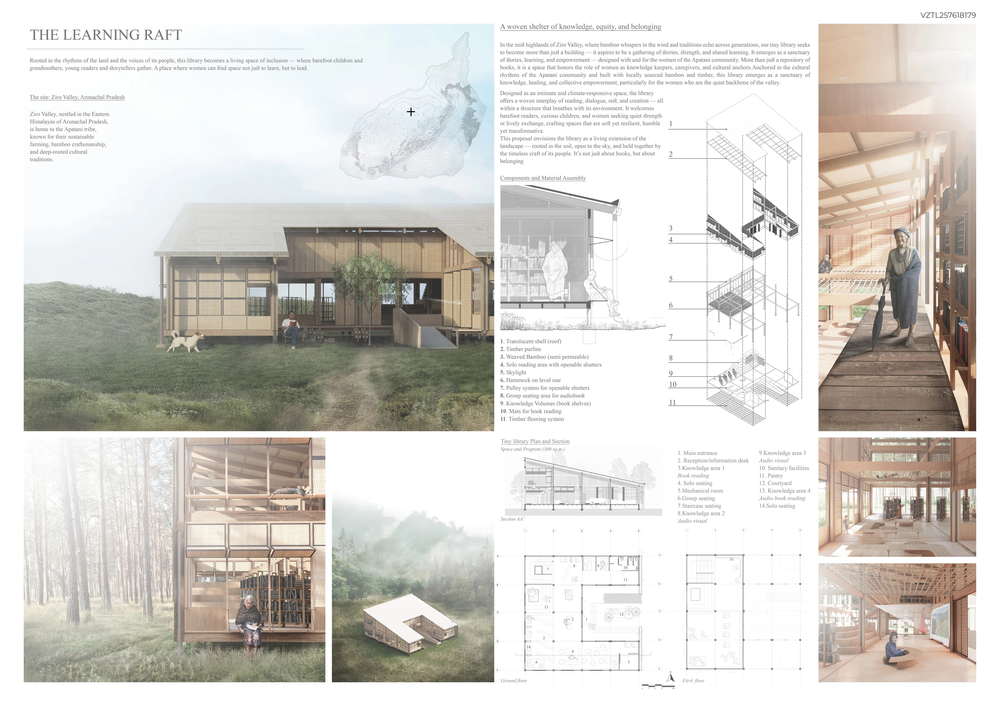

Library Design Competition · Tejas Ajit Jamdar
Tiny Library
Tiny Library is a library design competition project by Tejas Ajit Jamdar and Meera Bothe. The proposal was selected among the Top 50 entries in the Volume Zero competition.
The original competition board below presents the design as a single composition. It can be read alongside the project model in the interactive gallery, offering two ways to explore the same proposal. Project authorship and competition recognition are recorded here with the work.
Recognition
TOP 50 – VOLUME ZERO
Project credits
Tejas Ajit Jamdar AND MEERA BOTHE
Explore the interactive 3D portfolio →Save Tiny Library on Pinterest ↗
Project presentation
